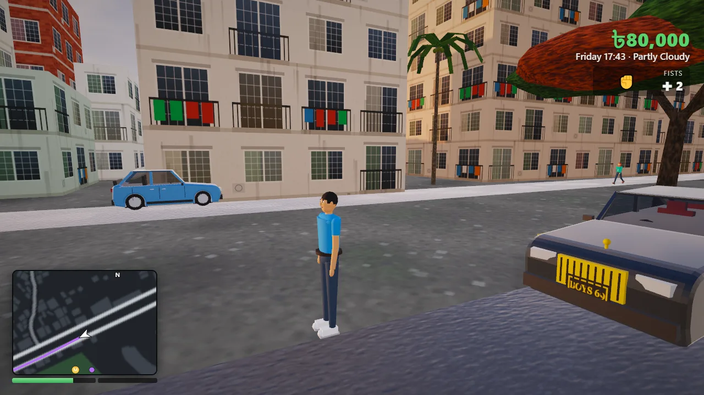
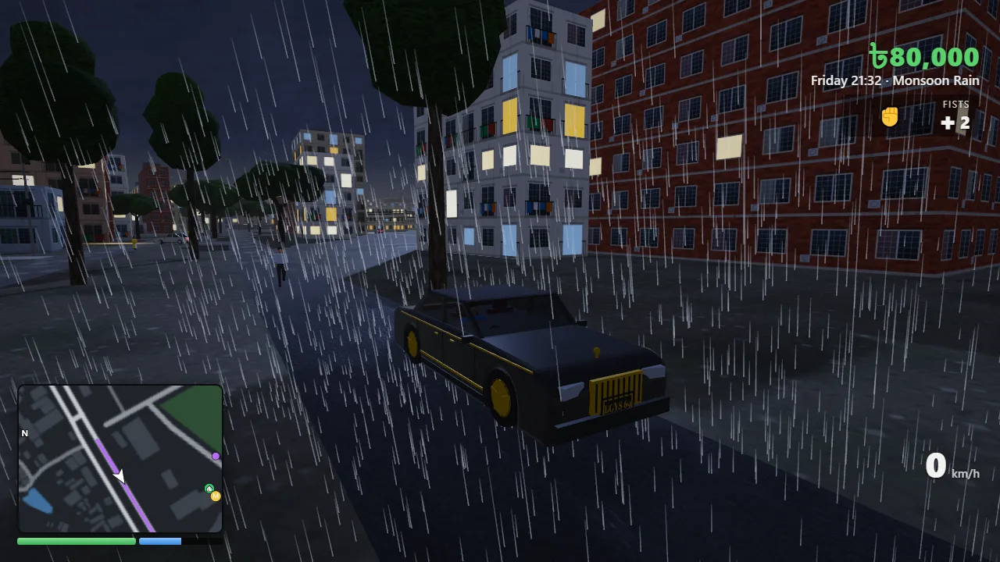
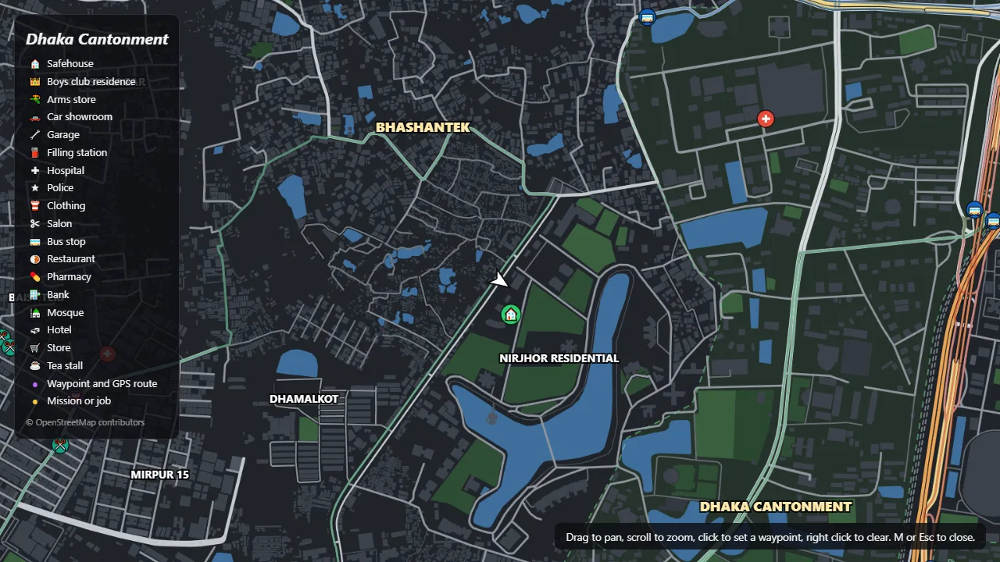
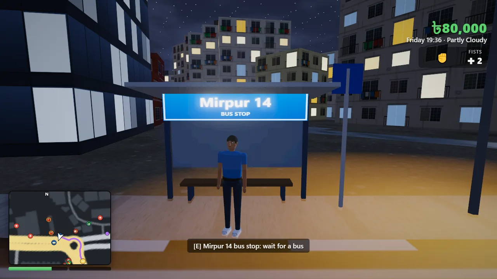
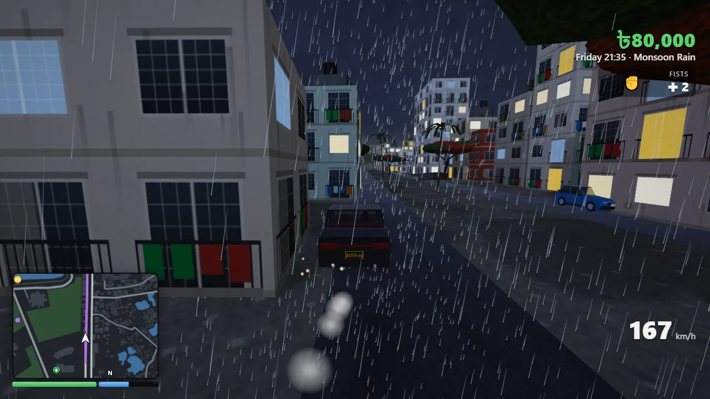
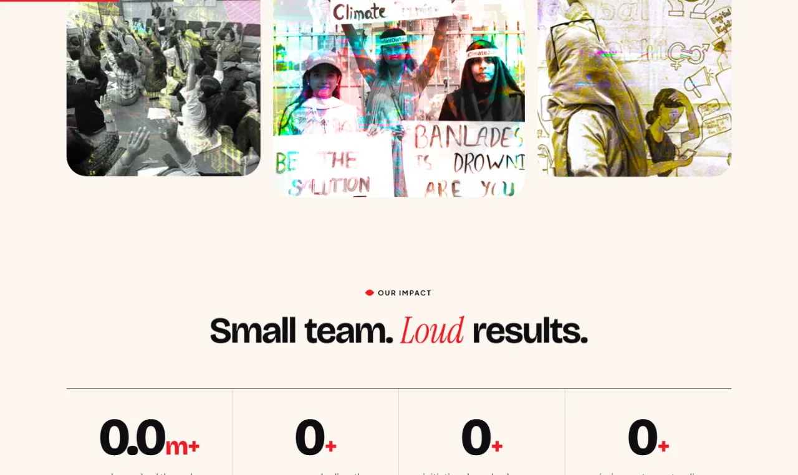
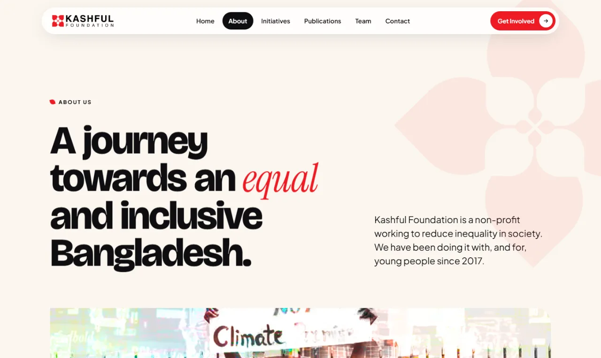
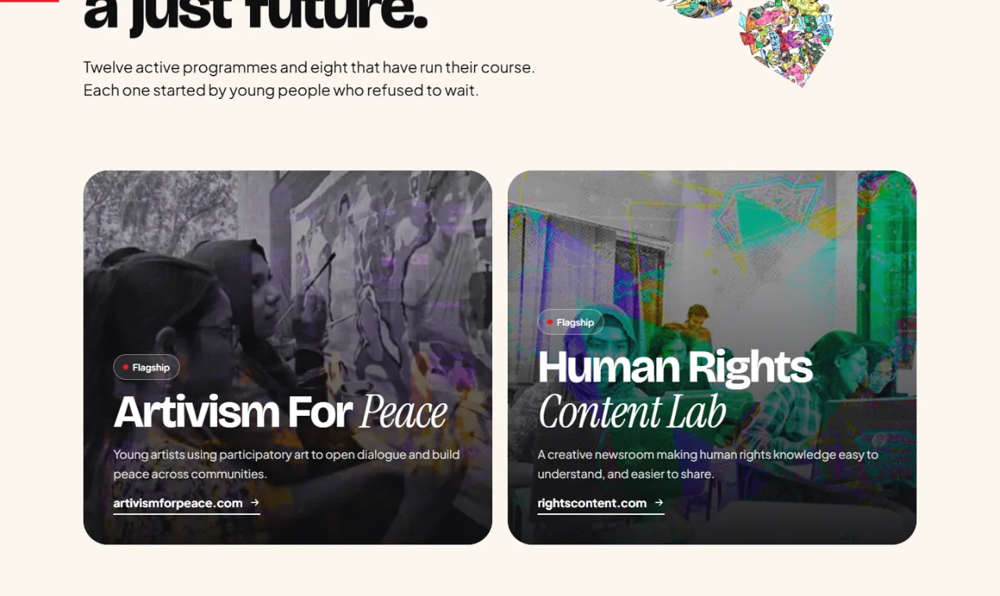
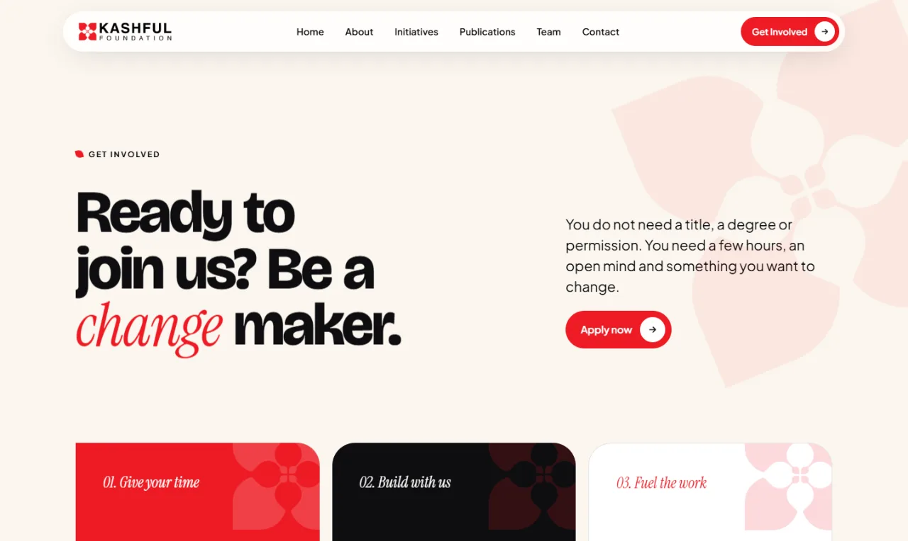
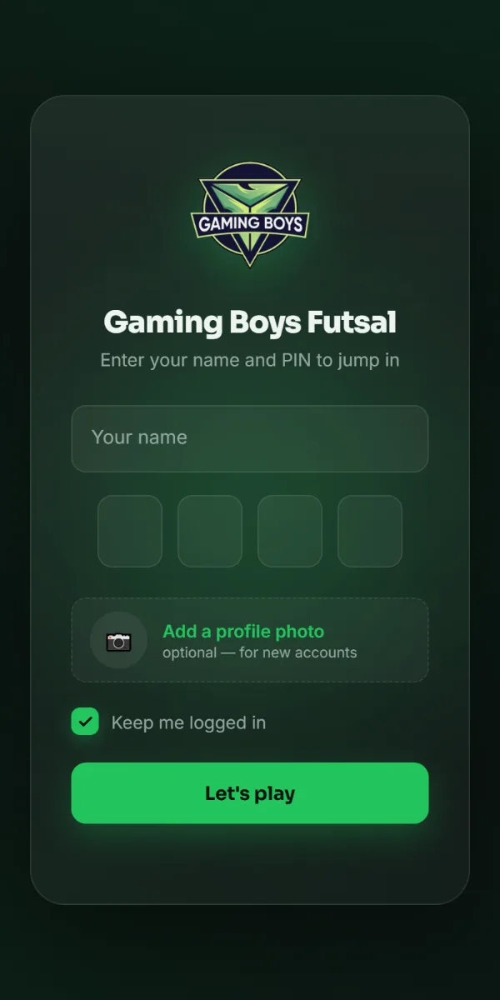

PROJECTS
Three worlds I built from scratch. Each one started as a small itch and turned into something real people use. Pick one, or just keep scrolling.
Boys Theft Auto
My own neighbourhood, rebuilt as an open world you can drive around with friends. All inside a browser tab.
THE INSPIRATION
Every open world game I loved was set in a city far away. I kept wondering what it would feel like if the map was my own neighbourhood: the same roads, the same bus stops, the same tea stalls on the corner.
So I built one on the real map of Dhaka Cantonment, and put my friends in it as playable characters.
ABOUT
An open world game that runs in a browser tab with no install. The city covers Dhaka Cantonment, Kachukhet, Mirpur 14, Banani, Mohakhali, Matikata and Manikdi: 3.5 km by 6.6 km at real scale.
There is not a single image or sound file in it. Buildings, vehicles, characters, textures and audio are all generated by code.
What you can do in it
Real streets
Airport Road, the Mirpur Banani flyover, the lakes, the golf course and the cantonment gates, converted from OpenStreetMap. It is all where it should be.
3,300 doors to open
Tea stalls, pharmacies, mosques, banks, salons, car showrooms and ordinary homes, each with its own interior to walk through.
Very Dhaka vehicles
CNG auto rickshaws, cycle rickshaws, city buses, motorbikes, army jeeps and more, with left hand traffic, signals and damage.
Monsoon and mood
A 24 hour day and night cycle with drizzle, monsoon rain, Kalboishakhi storms, winter fog and dusty haze. Wet roads shine and get slippery.
Multiplayer
Type a server name, share it, and up to 18 friends are in the same city. Chat, ride along as a passenger, walk into the same shop together.
The Boys Club
A password locked roster where my friends are playable characters, each with their own house, car, personal account and saved progress.
Jobs and missions
Drive a taxi or CNG, run a bus route, deliver food on a bike, buy properties, fill a garage and keep your money in the bank.
Buses and rides
Three bus lines stop at 60 real bus stops. Board as a passenger, or hire a CNG, taxi or rickshaw to take you to your waypoint.
Character creator
Body, hair, beard and a full wardrobe including panjabi, lungi, kameez and sari. Change again at home, salons and clothing stores.
Wanted system
Regular police outside, Military Police inside the cantonment, and special forces if you really push your luck.
Sound from nothing
Engines, horns, rain, thunder, sirens and footsteps are synthesised live with WebAudio. No recordings anywhere.
Club analytics
Members can see everyone's playtime and a progress score out of 100, so the bragging rights are always up to date.
Screenshots from the game






How to play
Built with
Kashful Foundation
A new home on the web for a youth led rights organisation, grown entirely out of the colours and shape of its logo.
THE INSPIRATION
Kashful Foundation has worked on civic, digital, gender and climate rights in Bangladesh since 2017.
The work was loud and full of colour, but the website did not feel like it. Nobody liked the font and nothing on the page moved. I wanted a site that actually felt like Kashful.
ABOUT
A complete redesign of kashful.org as eight connected pages: Home, About, Initiatives, Publications, Stories, Team, Get Involved and Contact.
The whole look comes from the logo: its red, its black and its petal shape. Kashful is the Bangla name for the white kans grass flowers that bloom every autumn, which is why a field of them is swaying above.
What went into it
Colours from the logo
Red, ink black and warm paper white, lifted straight from the Kashful mark. Nothing else was allowed in.
The petal motif
One sharp corner, three soft ones. The petal from the logo repeats in photos, buttons and cards on every page.
Smooth motion
Scroll driven reveals and gentle easing with GSAP, ScrollTrigger and Lenis, so the site glides and never jumps.
Type with a voice
Bricolage Grotesque for headlines, Plus Jakarta Sans for reading, a serif italic for emphasis and Hind Siliguri for Bangla.
Initiatives, sorted
Twenty programmes, active and past, each tagged with the pillars it serves: civic, digital, gender and climate rights.
A team of 53
Every member with a portrait and role, filterable by leadership, core team, coordinators, senior volunteers and alumni.
The journey
A timeline from the founding in 2017 to today, alongside publications and stories from the field.
Get involved
Clear paths for volunteers, partners and donors, with an FAQ that answers the first questions people ask.
One tiny build script
No framework. A single Node script stitches shared parts and data into eight fast static pages.
Pages from the site





Built with
GB Futsal RSVP
One link that tells my futsal squad who is in, who is out and who has paid. Then it grew into a whole club house.
THE INSPIRATION
Gaming Boys is my futsal squad. Organising a game used to mean one very long group chat: who is in, who dropped out, who is bringing a guest, who still owes the turf fee.
I wanted one link that answers all of it at a glance.
ABOUT
A realtime RSVP web app. An admin posts a session with a place, time, player cap and slot fee. Everyone votes In or Out, and the list updates live for the whole squad.
Over time it became the club's home: member profiles, attendance stats, and a full tournament hub for GB Futsal Season 4 with a player auction, fixtures and a league table that calculates itself.
Try it: a live demo
A toy version with made up players. Tap a button and watch the list move, just like the real thing.

The real login screen: a name and a 4 digit PIN.
Thursday night futsal
9:00 PM · 5 a side turf · Slot fee ৳200
IN
OUT
Waiting for votes...
Everything inside
Name and PIN
No emails, no passwords to forget. A name and a 4 digit PIN, hashed in the browser before it goes anywhere.
Realtime votes
Tap In or Out and everyone sees it instantly. No refreshing, no scrolling back through chat.
A fair last spot
The player cap is checked on the server at the moment you vote, so two people can never grab the same last slot.
Fees and payments
Each session shows the slot fee, with a paid tick next to every player. Guests are counted too.
Admin tools
Create and edit sessions, manage member roles, and preview the app exactly as a member sees it with one toggle.
Squad stats
Attendance for every member, animated tiles and a podium for the most reliable players.
Tournament hub
A full season in one tab: registration with a photo and payment reference, captains, teams and all the info.
Player auction
A live auction carousel with credit budgets. Sell a player to a team and the team sheets update for everyone.
Fixtures and table
Twelve group matches, a semi final and a final. Enter goals and assists, and the league table and top scorer race update themselves.
Built with
Got an idea? Say hi
If any of these made you smile, or you have a world of your own that needs building, pick a door and knock.